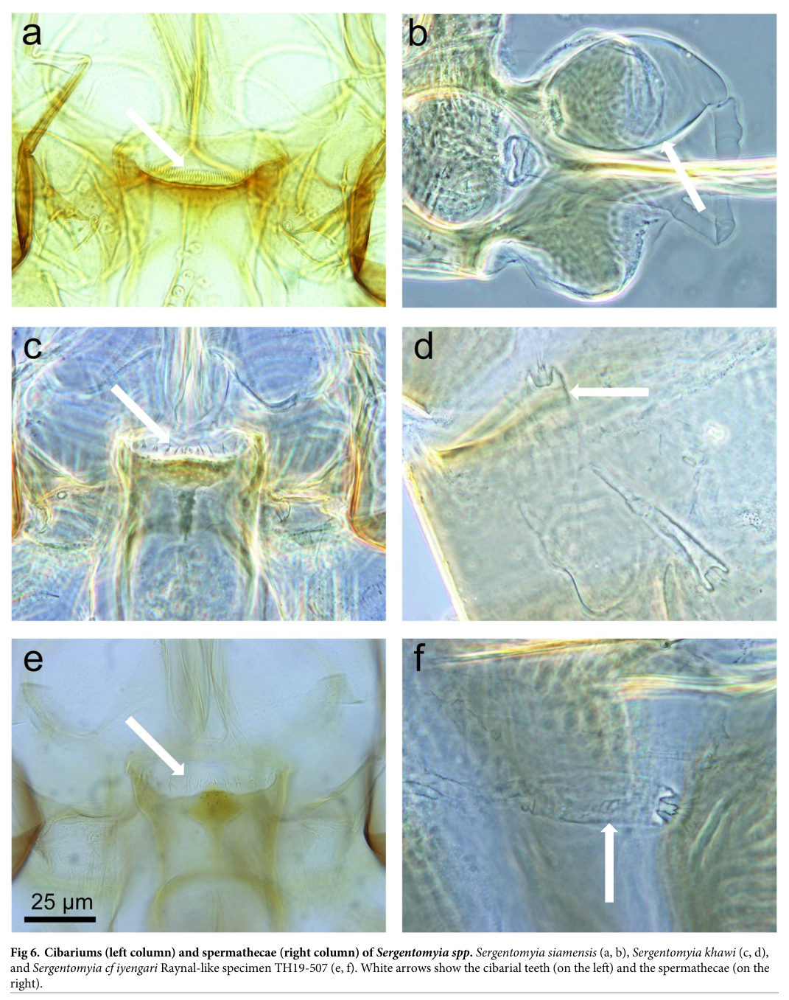

Species › Sergentomyia › Neophlebotomus
Sergentomyia iyengari
| Classification | Genus Sergentomyia, subgenus Neophlebotomus |
|---|---|
| Status | valid |
| Thailand | Khon Kaen, Udon Thani, Nong Khai (Quate 1962) - as S. iyengari s.l. |
| Diagnostic notes | S. iyengari s.s. (S India) lacks vertical teeth under the cibarial teeth; Thai material may be S. khawi or S. hivernus (Renaux Torres et al. 2023; Depaquit et al. 2019). |
| Sources | Lewis 1978, Quate 1962, Renaux Torres et al. 2023 |
⚠ Conflicting characters
| Character | Source A | Source B | Type | Comment |
|---|---|---|---|---|
| Species limits | Quate 1962: S. hivernus treated within S. iyengari | Depaquit et al. 2019: S. hivernus reinstated (tubular spermathecae, few vertical teeth) per Phumee et al. 2016 | name change | GenBank 'S. iyengari' sequences group with S. hivernus. |
How it keys out
The chain of characters leading to this taxon in each key (a ready-made diagnosis).
Oriental Phlebotominae: species and subspecies (Lewis 1978) – couplet 122a
- 1b Cibarial teeth in a transverse row (Fig. 65), fore teeth sometimes present (Figs 136, 245) and usually pointing upward. Pigment patch (Figs 66, 136) usually present. Hind ends of abdominal tergites 2-6 usually with all or most hairs recumbent, most sockets much smaller than on 1 except in S. musai. Style of ♂ with four major spines and an accessory seta (Fig. 80) ⚠
- 48b Abdominal tergites 2-6 with few or no erect hairs
- 49b Abdominal tergites 2-6 usually with no erect hairs. Spermatheca not segmented but sometimes striated or wrinkled
- 63b Spermatheca elongate and usually without spicules
- 64b Without this combination. Spermatheca usually not tubular
- 69b Without this combination
- 110a Cibarial tooth-row usually comprising parallel teeth, often nearly equal but not very narrow. Pharynx slender, with teeth or scales, or nearly unarmed. Antenna 3 long, longer than 4+5, often 1.25-2.00 times length of labrum. Wing rather broad, R2 usually longer than R2+3. Spermatheca often a thin-walled capsule, sometimes with cross-striations; duct sometimes narrow and joining common duct. Aedeagus usually slender with blunt tip. Paramere hooked. Style with two terminal spines and two others more or less terminal or near the middle ⚠
- 111a Female
- 112b Cibarium without eight rows of fore teeth
- 114b Cibarium with less than three rows of fore teeth or none
- 117a Cibarial central teeth markedly different from the rest
- 118b Cibarial central teeth not much larger than the rest
- 121b Cibarium with 17 teeth or less
- 122a Cibarium with 14-17 hind teeth, fore teeth absent or varying from one row of four to two rows of up to 20; pigment patch with anterior projection either thick, small or absent (leaving patch hemispherical) ⚠
Oriental Phlebotominae: species and subspecies (Lewis 1978) – couplet 150a
- 1b Cibarial teeth in a transverse row (Fig. 65), fore teeth sometimes present (Figs 136, 245) and usually pointing upward. Pigment patch (Figs 66, 136) usually present. Hind ends of abdominal tergites 2-6 usually with all or most hairs recumbent, most sockets much smaller than on 1 except in S. musai. Style of ♂ with four major spines and an accessory seta (Fig. 80) ⚠
- 48b Abdominal tergites 2-6 with few or no erect hairs
- 49b Abdominal tergites 2-6 usually with no erect hairs. Spermatheca not segmented but sometimes striated or wrinkled
- 63b Spermatheca elongate and usually without spicules
- 64b Without this combination. Spermatheca usually not tubular
- 69b Without this combination
- 110a Cibarial tooth-row usually comprising parallel teeth, often nearly equal but not very narrow. Pharynx slender, with teeth or scales, or nearly unarmed. Antenna 3 long, longer than 4+5, often 1.25-2.00 times length of labrum. Wing rather broad, R2 usually longer than R2+3. Spermatheca often a thin-walled capsule, sometimes with cross-striations; duct sometimes narrow and joining common duct. Aedeagus usually slender with blunt tip. Paramere hooked. Style with two terminal spines and two others more or less terminal or near the middle ⚠
- 111b Male
- 134b Style with spines terminal or subterminal
- 146b Style with spines of equal thickness, two or four terminal
- 147a All spines of style terminal
- 148b Paramere without such process
- 149b Cibarial pigment patch not long and narrow
- 150a Cibarium with conspicuous fore teeth ⚠
Indo-Chinese species (Thailand to Viet Nam) (Quate 1962) – couplet 12b
- 1b Abdominal hairs on tergites 2 to 6 recumbent, sockets much smaller than on tergite 1; palpal segment 4 longer than 1/2 length of 3; ♂ dististyle with all spines distad of center (except sylvestris and khawi); pharynx armed or unarmed; cibarium of ♀ usually with well developed teeth ⚠
- 4a R2+3 (beta) subequal to or longer than R2 (alpha); delta 1/2 or less length of R2
- 5a Males
- 6b Dististyle with all spines apical or subapical, coxite not elongate; antennal segment 3 shorter than or not greatly exceeding proboscis
- 8b Antennal segment 3 extends beyond proboscis tip
- 11a Genital filaments 3-4x length of pump
- 12b Palpal formula 1-2-3-4-5; cibarium with about 14 teeth, central 4 about 1/2 size of lateral ones
Indo-Chinese species (Thailand to Viet Nam) (Quate 1962) – couplet 20a
- 1b Abdominal hairs on tergites 2 to 6 recumbent, sockets much smaller than on tergite 1; palpal segment 4 longer than 1/2 length of 3; ♂ dististyle with all spines distad of center (except sylvestris and khawi); pharynx armed or unarmed; cibarium of ♀ usually with well developed teeth ⚠
- 4a R2+3 (beta) subequal to or longer than R2 (alpha); delta 1/2 or less length of R2
- 5b Females
- 13b Pharynx unarmed
- 15b Antennal segment 3 extending nearly to or beyond proboscis tip
- 17a Palpal formula 1-2-3-4-5 or 1-2-4-3-5
- 18b Cibarium with large, distinct pigment patch and 14 or more teeth
- 20a Cibarium with 14 to 17 vertical teeth, 4 central ones of which reduced; erect teeth absent or variably to 2 rows of 20 in each row; pigment patch hemispherical or top-shaped with anterior projection reaching arch ⚠
Figures

